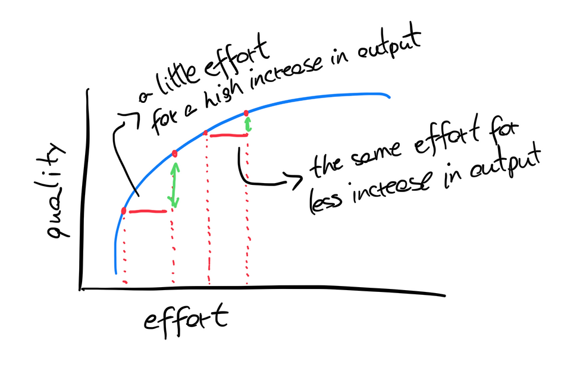
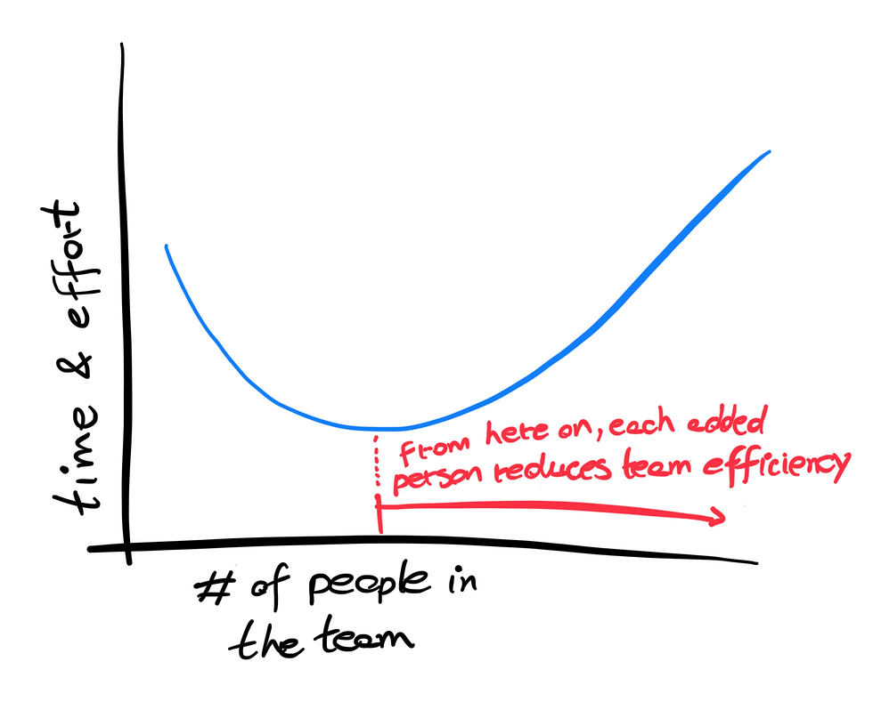
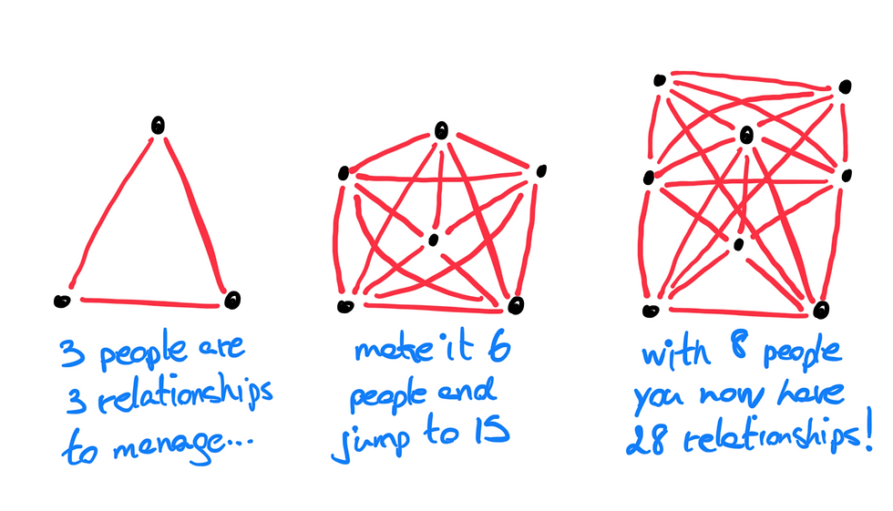
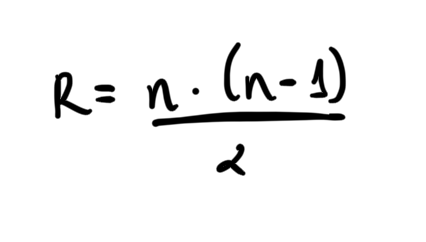
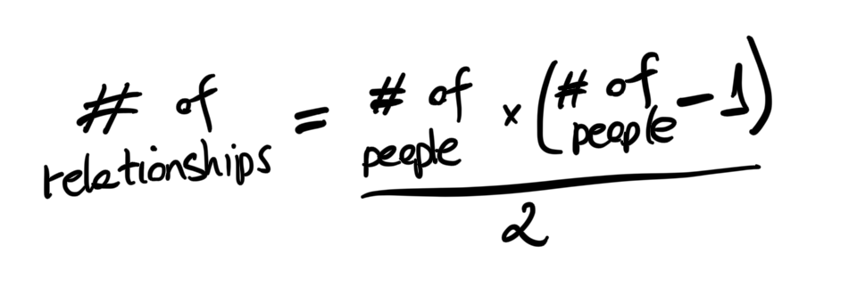
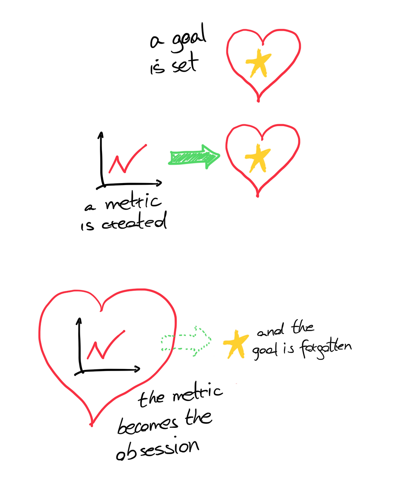
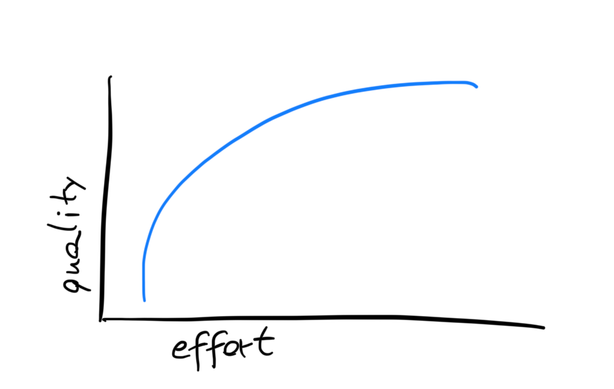
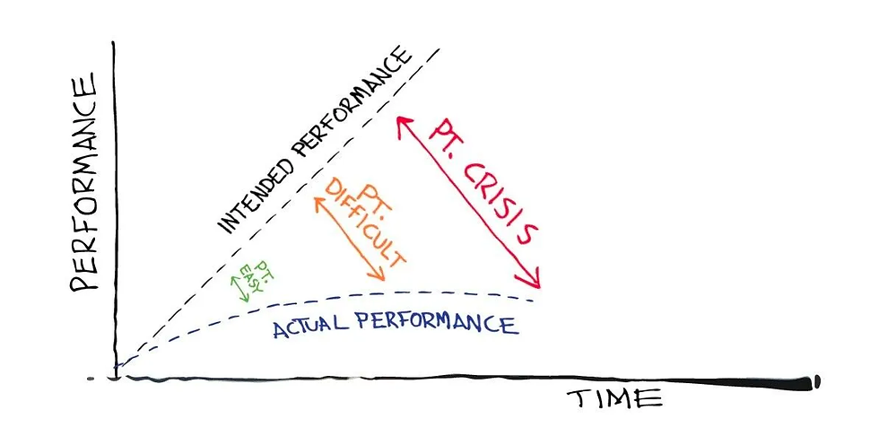

The Physics of Productivity - Part 2
2023-10-31

This is the continuation of the series "The Physics of Productivity". Read Part 1 here .
One of the reasons for the delay in publishing part 2 was the difficulty in choosing which laws and effects were most worth mentioning. More than a selection challenge, this vast amount of material made me stop and think about how we are a creature very unaware of itself, even though we think we do it better than any other living being.
The biggest example of all is the fact that the entire modern economy is based on the belief that we are not only completely rational but also uninfluenced . That is, the main decisions that affect your life are based on the idea that we don't interact and that we are always rational in the choices we make. Between you and me, neither I nor you nor anyone else can always be rational. This is the greatest irrationality that exists.
Anyway, the point is that we do things. We wake up and go to sleep doing things. Most of the time, we are trying to do productive things, i.e., things that will generate some value for someone (including ourselves). Generating value is a very broad term, but it can be simplified to the idea that value is anything that helps someone or something achieve their goals .
When we do things alone, there is a dynamic. When we do them in a group, this dynamic tends to change. And this is where the fifth law of this series comes in:
5. Brooks' Law
A team of three people is overwhelmed, and deliveries are delayed. Everyone is working to their limit, so they are allowed to hire more people. The next week, two more people arrive, and the workload seems to have been alleviated with the redistribution of tasks. Seeing that bringing in more people had an effect, three more people are hired. Now the team has eight members. Suddenly, meetings become too long. Too many topics for too little time. Difficulty in making decisions because everyone wants their voice to be heard. Intrigues and dissatisfaction begin. Chaos.
Fred Brooks was a pioneer in software engineering and published a study showing that the more people were added to a delayed software project, the more it got delayed. Despite the narrow scope of his study, it is not absurd to extrapolate this idea, to some degree, to other types of teams. Each additional person makes the team more productive until an inflection point occurs when the next person is hired and the team starts to deliver less.
From then on, adding more people will only increase costs and provide the same or worse benefits. These costs, besides financial ones, come in the form of transaction costs : managing more people's work, trying to meet more people's expectations, and the time and energy of the team's leadership to do all that.

To get the gist of how complex this can become, we can do simple calculations about how we interact. The more people in a group, the greater the number of relationships created. The thing is, this number of relationships grows much faster than the number of people. Think about the example from the first paragraph:

[warning: if you're not comfortable with math, you can skip the next part]
From observing how the number of relationships increases as more people are added, we can arrive at the following formula:

Where R is the number of relationships and n is the number of people. An easier way to understand is:

From our own inference or from the derivative of this formula, we can find the marginal complexity that each person adds to the group:
R’ = n
That is, each person adds to the group a number of relationships equal to the order in which they joined (e.g., the tenth person to join adds 10 more relationships to the group).
[end of math]
This complexity can indeed be managed. The point of Brooks' Law is to draw attention to the ideal number of people on a team. Sometimes, the problem isn't there. A team may be overwhelmed because there's rework, because there's no systematization of tasks and deliveries, or simply because the company culture glorifies being overloaded.
Whether for a software development team or the committee that will organize the company's year-end party, it's important to establish limits on how many people make the team optimal.
6. Goodheart's Law
Supposedly, during the British colonial period in India, the British were concerned about the number of venomous snakes in Delhi. To solve the problem, they offered a reward for each dead snake.
At first, the initiative seemed successful, with a large number of snakes being killed for the reward. However, some people began breeding snakes to earn more money. When the government found out about the scheme, they canceled the program, leading the snake breeders to release the snakes into the streets, resulting in more snakes in the city than there were before the initiative.
Setting aside the violent colonization for a moment, this story serves as an example for various initiatives, whether within companies or in public policies. Economist Charles Goodheart realized that the focus on statistics led to public policies being created to change the statistics, not the reality they sought to measure. This gave rise to Goodheart's Law with the following postulate:
"When a measure becomes a target, it ceases to be a good measure."
At first read, this statement might not make sense. If we put all our focus on the metric, doesn't that support the objective? Not necessarily, and for several reasons:
When the goal has other influencing factors besides the chosen metric. If skilled people underwent many training hours, you might assume that training hours lead to more proficiency. However, proficiency involves other elements like the quality of the training, predisposition for learning, or the training content itself.
When the metric helps measure the achievement of the objective only under specific conditions. In the past, the success of a musician or band was measured by the number of albums sold. Since the advent of listening to specific songs from an album via Spotify or similar apps, there's little reason to buy albums. Still, the music industry was slow to accept this, and some record labels continue to prioritize this metric.
When correlation is confused with causality. You might find that people wearing sunglasses consume more ice cream, but offering sunglasses to people won't make them buy more since both wearing sunglasses and ice cream consumption are influenced by a third factor (whether the day is sunny or not).
When the chosen metric results in the opposite of the desired objective. The example of the snakes in India illustrates this well.
The most interesting thing about Goodheart's Law is that it applies across various contexts and scopes. One debate it spurs, for example, is whether GDP is the best way to measure a country's development. It likely isn't, because there are countries with high GDPs that still have high levels of poverty or pollution and environmental degradation. Having only GDP growth as a country's primary metric ends up generating an incessant pursuit of money at the expense of other fundamental aspects for society and each individual.
When we face this situation, one alternative is to create a bounding metric , which is a secondary metric meant to ensure the primary one doesn't operate unchecked. Although imperfect, this can be an effective solution. If a telemarketing company wants to reduce the average handling time, it can pair this metric with customer satisfaction to ensure that agents aren't encouraged to make calls quick at the expense of quality, for example.

The point here, however, is much more evolutionary than static. Metrics will always be imperfect, which doesn't mean they are useless. However, they tend to influence behaviors, so the key is to keep in perspective what really matters and not get swept away by just rising numbers and charts.
7. Satisficing
How much money would I need to offer you right now for you to stop working (assuming you want to stop working)? One million? Ten million? 100 million?
Let's say your answer is ten million. If I offer you two million, do you accept? No? What about 9.3 million? I'd imagine you'd hardly refuse.
This is because, at a certain point, our satisfaction doesn't increase in proportion to what we add. When you're hungry and eat a slice of pizza, it's wonderful. The second slice is still very good. The third slice starts to feel excessive. You could eat a fourth slice, but you realize you wouldn’t be proportionally more satisfied compared to the price of that slice, right? For people with eating disorders, they might eat until they're physically sick. They can't feel sufficient satisfaction.
Feeling sufficiently satisfied is a phenomenon called "satisficing" in English, which combines "satisfying" with "sufficing". Typically, our relationship between satisfaction with something and the effort (e.g., money, time, energy, etc.) looks like this:

If we look closely, we'll notice that, as we get more of what we want, the same effort doesn't necessarily bring the same satisfaction.
In economics, this is referred to as diminishing marginal returns .
How does this apply to productivity? If I could deliver good work by the end of the day (say, it would earn a 9.5 out of 10), should I turn off the computer and do something else? Or do I absolutely want to deliver 10 out of 10 work even if it involves another 5 hours of work beyond the 8 I've already worked today? What this law suggests is simple: turn off the computer and do something else that's also important to you, because it simply isn't worth it.
But WAIT. If that were the case, we wouldn't have top-tier athletes. If Usain Bolt had been satisfied with running 100 meters in 9.72 seconds, he wouldn't have strived to achieve 9.58 seconds. You might be thinking, "Forget that lazy law." What's not immediately apparent is that he wasn't just pushing to shave off 0.14 seconds. He was striving to break a world record. For the third time in a row. Maybe Bolt approached breaking records the way you approached those slices of pizza. Up to three, it's worth it. This might be why he retired at 32.
The point is to know the difference between grit and obsession . As similar as these words sound, they have one specific differentiating feature: clarity of purpose . If the marginal effort is worth it for your objective, you should definitely go for it. The problem is that obsession tries to surround us every minute, and we often don't notice.
Perhaps you're working beyond your goals. Maybe you realize that the satisfaction you seek, you already have. Going beyond the limit can be costly because, in the beginning, all I might need to work well is sleep, physical readiness, and food. Later on, it might start costing me my health, happiness, and, ultimately, life's meaning.
8. Point Easy
On January 28, 1986, the Space Shuttle Challenger exploded in the air 73 seconds after its launch, killing all seven crew members. After a thorough investigation, it was determined that the explosion was caused by a faulty seal that leaked and created enough pressure to disintegrate the shuttle.
What was later discovered made the incident even more tragic: it was a completely preventable accident.
The NASA engineers responsible for Challenger had realized that there was a risk that temperature changes on the launch day might compromise the seal. They reported this to their boss, who reported it to his boss. Who decided not to tell anyone else. After years of development, millions of dollars invested, and the entire expectation of the U.S. government for the launch, saying that the Challenger could not be launched would be a setback. After all, who likes to bring bad news that will upset the boss?
At Conversant , where I am a consultant, a model was created to ensure that situations like these don't happen. Given that our job is to improve team results through the evolution of conversation quality, the Point Easy was created, which functions as represented below:

Leaders have the responsibility to ensure their teams achieve their objectives. Part of this involves having conversations at the right time, especially when noticing that performance is deviating from expectations. The thing is, bad news usually don't get better over time . Therefore, the more a necessary conversation is postponed, the more complicated the situation can become.
Addressing a problem when it's still at the easy point (where expectation and reality are not yet too far apart) may seem challenging at first, but it can increase levels of trust and collaboration. As this conversation is delayed, the problem may grow to a crisis point, where the dialogue may lean more towards "why did this happen?" rather than "what can we do to adjust our course?"
If NASA had considered this, perhaps the Challenger crew might still be alive today, telling tales about their trip to space.
Similarly, all of us have problems that grow only because we choose not to talk about them. This can apply to any dimension of life, and the productivity at stake here is the quality of life we create for ourselves.
With this final law, I conclude this series on the physics of productivity. As I said at the beginning of the first part, it's not about doing more and more things. It's about being able to do things using the resources we have at our disposal in such a way that no area of life is neglected. There's no amount of production that can compensate for excessive work that prevents you from being with those you love. There's no production that allows you to develop self-love by only attributing your worth to your profession.
Doing is great. Living is better.